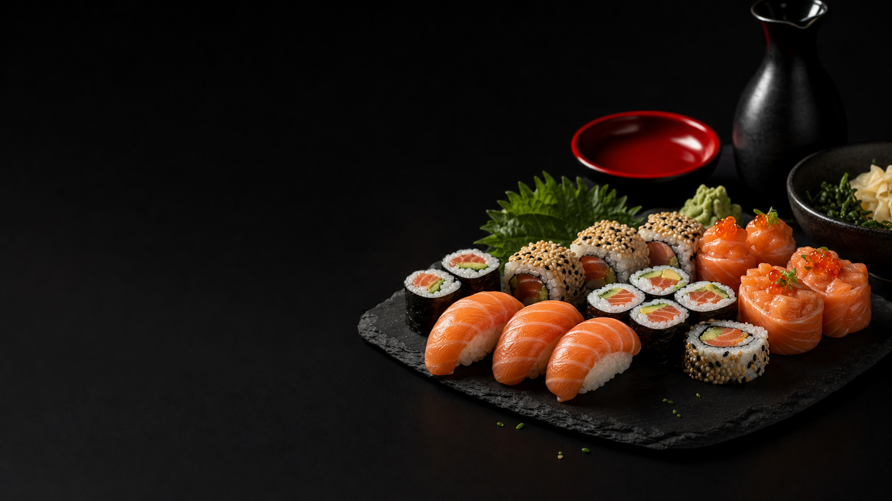
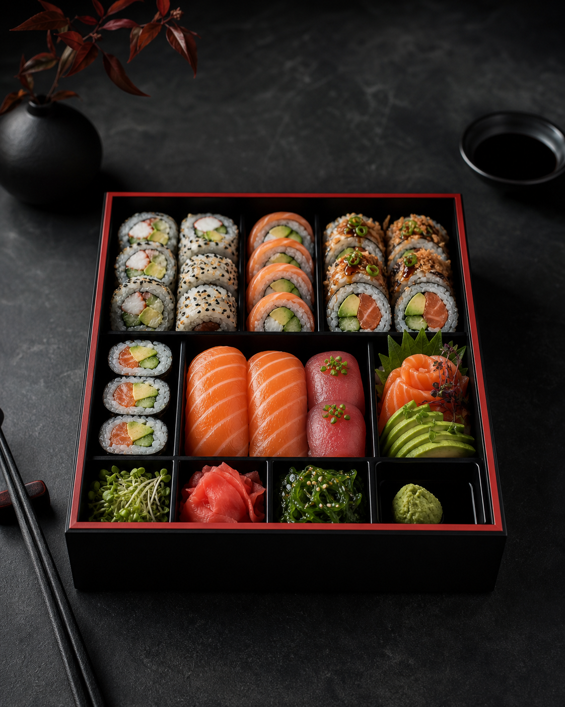

I CREATION Crevette x8
Une entree premium pour valoriser les creations Fuji des l'ouverture de la carte.
Schweighouse-sur-Moder
Une vitrine plus nette pour commander vite : signatures, box composees et informations pratiques accessibles des l'arrivee.

Concept
Le principe Fuji reste simple : choisir une petite, moyenne ou grande box, puis composer a la piece parmi une gamme de sushis frais.
La refonte met ce choix au premier plan avec une lecture plus rapide sur mobile et une carte organisee pour commander sans chercher.

A la piece
Qualite
Poisson en provenance d'Ecosse et legumes frais.
Tracabilite, temperature et fraicheur suivies en production.
Serviettes reutilisables fabriquees a la main en Alsace.
Engagement mentionne sur le site actuel de Fuji.
Horaires
Contact